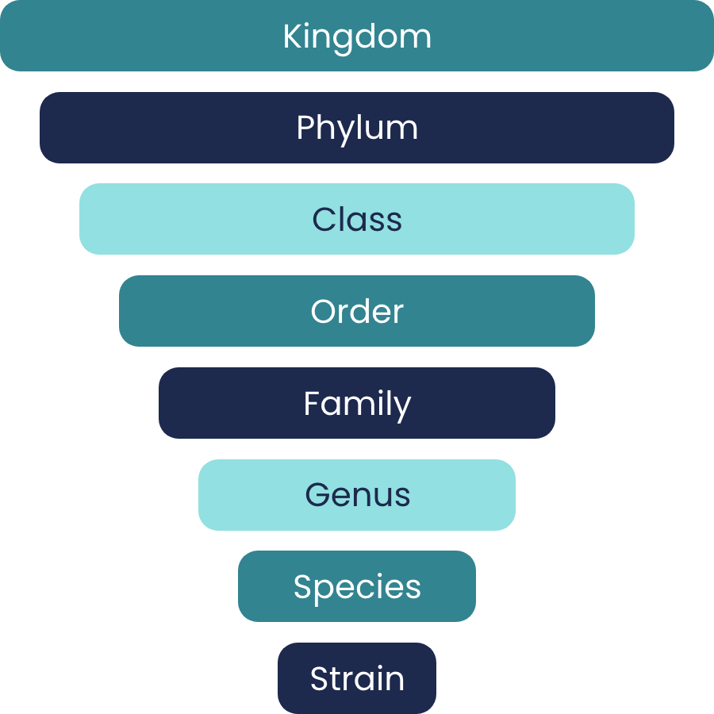
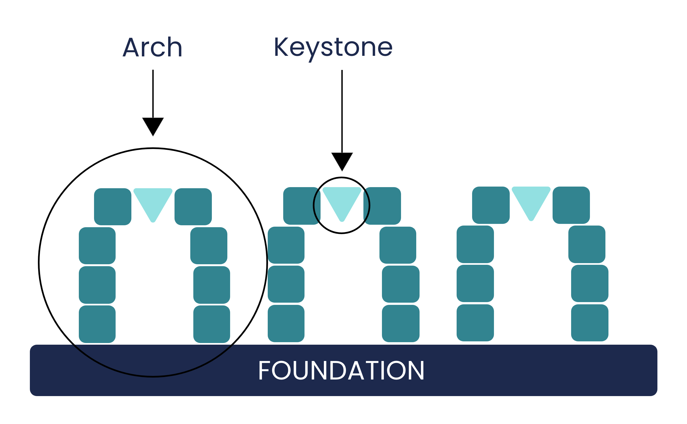
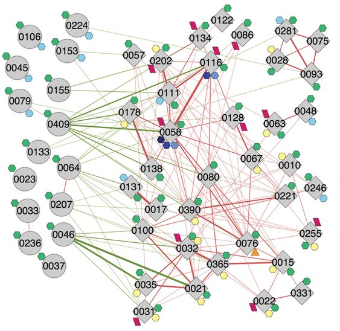
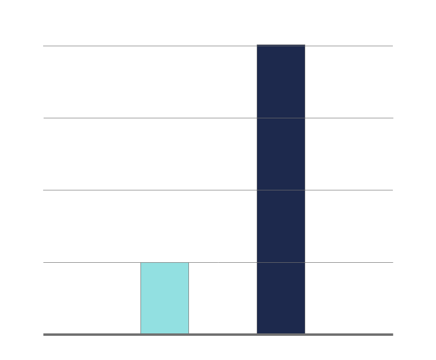

The Four Pillars of Understanding Microbiome
Pillar 1: We must move from studying association to studying causation.


To date, plenty of studies have shown that patients of various diseases have different microbiota compared to healthy individuals. There is also significant evidence identifying diet as the main force for shaping the composition of the gut microbiota. Thus, the key to changing the gut microbiota lies in dietary changes. However, in many cases it is still unclear whether changes in a patient’s gut microbiota are the cause or the end result of a disease? Changing one’s diet can simultaneously impact gut microbiota composition and patient health outcome. However, does the changed gut microbiota also improve health? Or is it merely an end result of the improved health?
Some bacteria are more frequently found in healthy people, while other bacteria are more frequently found in patients. Nevertheless, such association evidence cannot prove whether a bacterium is beneficial or harmful. Moving from studying association to studying causality, we must isolate the gut bacteria and inoculate them into germ-free animal models to test their health effects. In 2012, Dr. Zhao found a particular pathogen overgrown in a morbidly obese patient's gut. After receiving a microbiome-targeted diet, the pathogen quickly reduced from 1/3 of the patient’s gut bacteria population to a non-detectable level. At the same time, this patient lost 110 lbs of his initial body weight and recovered from type 2 diabetes. Dr. Zhao hypothesized that this pathogen played a causal role in the patient's obesity and type 2 diabetes. This pathogen was then isolated from the patient's baseline samples and transferred to a germ-free mice gut. The lab results clearly showed that this pathogen induced obesity, fatty liver, and early diabetes in the recipient mice. Dr. Zhao then identified the exact molecule from the pathogenic bacteria that is responsible for causing the diseases. For the first time, science proved that certain “bad” gut bacteria can CAUSE obesity and type 2 diabetes.
In 2018, Dr. Zhao found that some bacteria are scarce in the gut of type 2 diabetes patients. After patients received a microbiome-targeted diet, these bacteria became abundant in the gut. Meanwhile, patients showed significant improvement in their health indicators. He then isolated thesebacteria and transferred them to diabetic mice. Amazingly, the bacteria helped mice recover from their diabetes. These bacteria are proven beneficial!
We believe that conducting causality studies with a molecular level of rigor is key to establish our confidence to use bacteria and their effector molecules as biomarkers and targets for disease prevention or treatment.
Pillar 2: We must identify “good” and “bad” bacteria at the strain level.

Strains are the basic units of bacteria just as human individuals are the basic units of the human species.
As a species, human individuals share 99.9% of their genetic code which means that they are biologically similar to each other. However, bacterial strains in the same species only share 70% of their genetic code. As a reference, humans and mice still share 90% of their genetic code. This means that the difference between two strains within the same bacterial species can be greater than the difference between humans and mice.
Because of such vast genetic differences within the same bacterial species, some bacteria can be pathogenic and others can be beneficial. We cannot collectively talk about bacterial species as good or bad. In 2016, Dr. Zhao found one strain that can aggravate gut inflammation and colitis in a supposedly beneficial species of gut bacteria. In 2017, he discovered that a healthy diet does not promote all the strains belonging to a supposedly beneficial species. Many of the strains were, in fact, non-responders to the healthy diet.
We cannot use species as functional units to understand the role of the gut microbiota in human health and diseases because their members often do not behave in the same way. We need to reach strain-level specificity if we desire to identify whether a bacterium is good or bad to our health.
Pillar 3: We must remember that bacteria form ecological guilds.
Members in an ecosystem (e.g., a rain forest) are dependent on each other. They form an ecological structure called a guild. Each guild is a coherent functional group of various members which either thrive or decline together. Dr. Zhao found that bacterial strains in the gut ecosystem also organize themselves into guilds. In 2015, Dr. Zhao identified three beneficial and nine harmful guilds in the gut of genetically obese children. This was the first time that the guild concept was utilized in human microbiome research

In nature, we understand that some members within an ecosystem are more important than others. The tall tree species in the rain forest are known as the foundation species because they dominate the ecosystem in abundance and influence, structuring and stabilizing the entire rainforest. Foundation species are different from keystone species, which have limited influence. If you lose a keystone species, you may lose part of the ecosystem. If you lose the foundation species, you will eventually lose everything. Are there any gut bacteria that also work as the foundation species to structure and stabilize the healthy gut microbiota?
In 2018, Dr. Zhao discovered the first example of the foundation species in the gut microbiota. When at a high level, this guild of beneficial bacteria can effectively change the entire gut environment and make it unfavorable to pathogens in the gut. This guild plays a fundamental role in structuring and stabilizing the healthy gut microbiota. Bacteria from various groups can be found within this guild. We have named this group of bacteria the "Foundation Guild™" of the gut microbiome.

Because of the critical role that the Foundation Guild™ plays in a healthy gut microbiota, promoting and restoring this group should be the focus of any effective microbiome therapeutics.
Pillar 4: We must not rely on existing reference databases for microbiome research.
Our current knowledge of the gut microbiome is still limited. If we relied on existing reference databases to analyze microbiome data, we would limit research to what is already known, re-discover what others have previously found, and potentially over look novel bacteria that are important to human health.
We need to adopt a system-level, non-targeted, discovery approach for understanding gut microbiota in human health and diseases. We need to develop a reference-independent strategy for analyzing microbiome data. In the potentially beneficial guilds identified by Dr. Zhao, only about 20% can be characterized. The other 80% represent novel bacteria that have never been discovered before.
